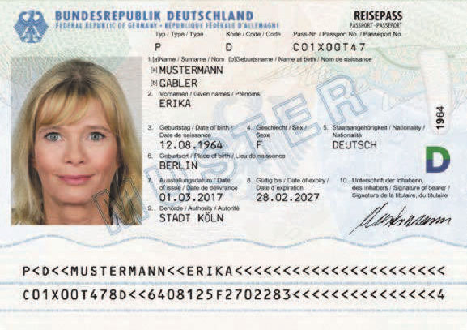
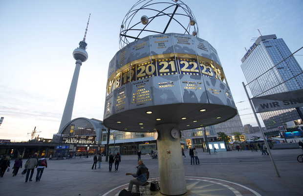
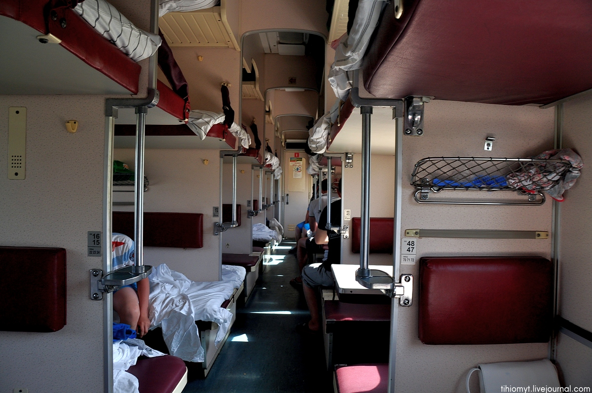

Разное
Образец, узор -- (das) Muster [м'устэр].
Формуляр -- (das) Formular [формул'ар].
Формуляр -- (das) Formular [формул'ар].
Одна из знаменитостей в мире тех, кто только начинает жизнь
в Германии -- Эрика Мустерман, вымышленный персонаж, фото и
данные которой часто используют во всяких документах, для примера;
на образцах, изображающих заполненный формуляр, и так далее.
Эта фамилия и означает в переводе с немецкого что-то вроде
"человек-пример" (отличная идея для киноцикла: если есть человек-паук,
почему не быть человеку-примеру). Человек -- Mann,
пример, образец -- Muster. Muster на ткани -- это узор, Musterschüler -- образцовый ученик,
а "Muster ohne Wert" ("образец без ценности") раньше писали на почтовых
бандеролях с товарными пробами.

Загранпаспорт Эрики Мустерман
Военный смотр -- (die) Musterung [м'устэрунг].
Осматривать -- mustern [м'устэрн].
Осматривать -- mustern [м'устэрн].
У этого слова есть более воинственный родственник: Musterung --
изначально военный смотр, осмотр новобранцев на плацу. Узнаете?
Правильно, "муштровать" и вообще "муштра".
Слово пришло в немецкий из итальянского mostra, "показ,
выставка" (от mostrare, "показывать"), а оно -- от латинского monstrare,
"показывать, указывать".
Из той же латинской семьи -- знакомые русские слова. "Демонстрация" --
от demonstrare, "наглядно показывать". По-немецки: demonstrieren.
"Монстр" -- от латинского monstrum, что означало "знамение, чудо",
буквально "явленное, показанное" (в знак предупреждения).
Что это за словечко у нас там пролетело -- на плацу?
Место, площадь -- (der) Platz [плац].
Плоский -- flach [флах].
Плоский -- flach [флах].
"Плац" -- это немецкое (der) Platz, "место, площадь".
В немецком слово заимствовано из латинского platea, "широкая
улица, открытое место", а то -- из греческого plateia, "широкая",
от platys, "широкий, плоский". Тем же путем слово разошлось по всей
Европе: французское place, итальянское piazza, испанское plaza,
английские place и plaza -- все это одна и та же греческая
"широкая улица".

Самая знаменитая площадь Германии с уютным советским душком: Александрплац в Берлине
У заимствованного из-за границы "плаца" в русском есть и исконный двойник:
"площадь". И греческое platys, и русский "плоский", "плашмя", "площадь" идут от одной
основы. Она же дала немецкое flach (плоский) и английское flat.
Так что плац и площадь -- дальняя родня: одно слово вернулось окольным
путем через греков и латынь, другое все это время оставалось дома.
Русский "плацкарт" -- это немецкая Platzkarte,
буквально "карточка на место". Покупая поездку на немецком поезде, и в наши дни
можно бронировать или не бронировать сидячее место; примерно сто лет назад система
была такая же на все типы вагонов: покупаешь право на проезд в таком-то поезде,
довеском можно и билет на конкретное место докупить -- "плацкарту". Со временем
многим типам вагонов нашлось короткое название -- "купе", "общий" -- а спальным
вагонам с забронированным местом досталось "плацкартный".

Раз речь зашла про поезда -- откуда взялся "вагон"?
Повозка, машина -- (der) Wagen [в'аген].
Путь, дорога -- (der) Weg [век].
Двигать -- bewegen [бев'еген].
Путь, дорога -- (der) Weg [век].
Двигать -- bewegen [бев'еген].
"Вагон" пришел к нам с железной дорогой в девятнадцатом веке --
то ли прямо из немецкого Wagen, то ли через французское wagon
(которое и само в конечном счете германское). Wagen по-немецки --
это любая повозка, а в наши дни еще и автомобиль: Volkswagen
буквально "народная машина", Lastwagen -- грузовик ("грузовая
повозка"), Krankenwagen -- скорая ("повозка для больных"),
Kinderwagen -- детская коляска.

Volkswagen
И тут снова знакомая история: "вагон" мы одолжили на Западе, хотя
исконный родственник Wagen у нас был все это время. И Wagen,
и Weg ("путь"), и bewegen ("двигать") восходят к праиндоевропейскому
корню *weǵʰ-, "везти, перемещать" -- тому же, от которого напрямую
идут русские "везти", "воз", "возить". Латинские veho, "везу"
(отсюда "вектор"), и via, "дорога", -- оттуда же. Русский "воз" вполне
описывается современным и таким многозначным словом Wagen.
"Вагон" и "воз" -- дальняя родня: одно вернулось по рельсам из Европы,
другое все это время каталось дома.
Недалекий от "вагона" "вокзал" сюда не относится совсем:
оно от названия лондонского увеселительного сада Vauxhall.
Теплый -- warm [варм].
Варить -- kochen ['кохэн].
Повар -- (der) Koch [кох].
Кухня -- (die) Küche ['кюхэ].
Готовить -- garen ['гарэн].
Варить -- kochen ['кохэн].
Повар -- (der) Koch [кох].
Кухня -- (die) Küche ['кюхэ].
Готовить -- garen ['гарэн].
Поговорим про готовку, приготовление пищи то есть.
"Варить" по-немецки -- kochen. Забавно, что слово "повар" по-русски
обозначает того, кто варит -- и точно так же по-немецки: повар --
(der) Koch.
"Варить" идёт от корня *wer-, и по одной из версий
от него же немецкой "warm" -- тёплый. То есть теплый -- это
типа вареный.
Есть и другая версия: что warm идет от *gʷʰer- -- от которого
"гореть", "горячий", "жар", "гарь", "угар" и прочее.
Какая из двух
версий верна, спорят до сих пор, но для памяти хороши обе: warm --
либо "варенное", либо "горячее".
Подбираем остаточки этой темы. Повар -- Koch -- знакомо нам
из "Острова сокровищ": корабельный повар по-русски "кок",
пришло от голландского kok, оно же немецкое Koch.
Оттуда же наша "кухня" (чтобы быть точным: от латинского coquere, "варить", от которого
и kochen; кухня через латинское же coquīna). Как кухня по-немецки? (Die) Küche.
Наша цепочка сверху -- "гореть", "горячий", "жар", "гарь", "угар" и прочее --
напоминает мне про немецкий глагол "garen": "готовить". Только вот он формально
как раз ни с чем из этого не связан. Но запоминать просто: "Was lange gart, wird extra zart"
-- "Что долго жарили, то экстра нежное". (На самом деле нет: оно уже в твердые угли превратилось.
"Gart" здесь на самом деле про тушение или медленное запекание.) Эта фраза -- переиначенная
немецкая поговорка "Was lange währt, wird endlich gut": дословно "что длится долго, дает хороший результат".
Менее точно, но более художественно: "Терпенье и труд всё перетрут". Ее полагается произносить,
когда после пары месяцев оббивания порогов немецких ведомств собраны все документы.